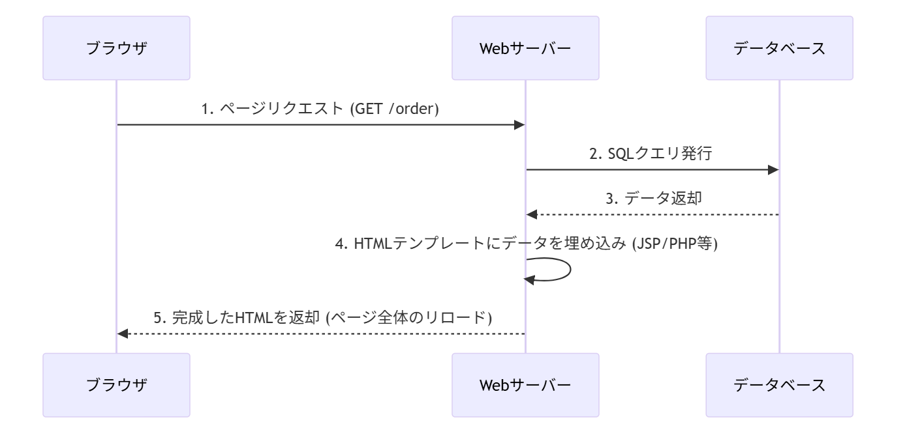
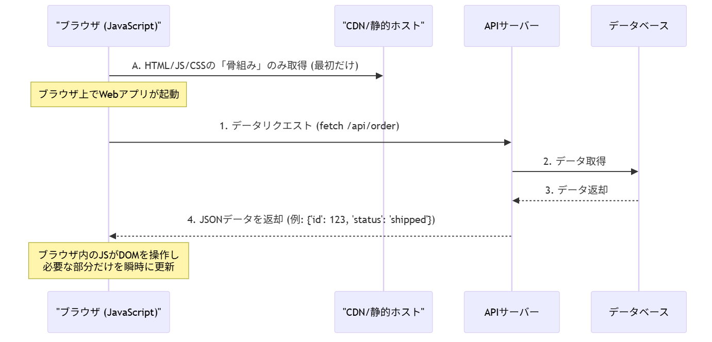
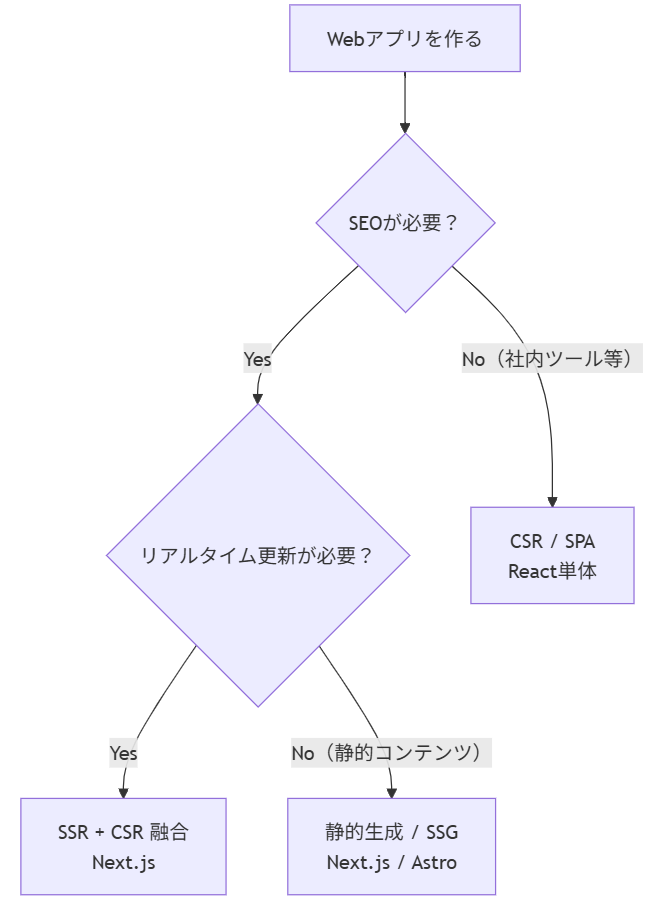
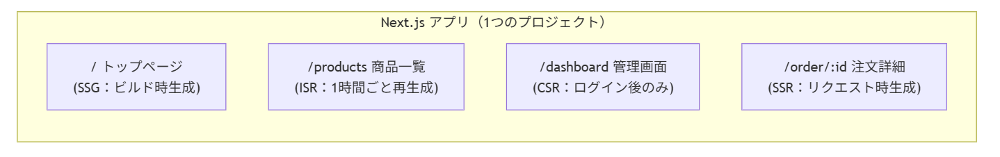

こんにちは!!もりもりです!!今回は、モダンWebアプリ開発の歴史についてお届けします。
Web開発黎明期の「文書の集合体」としてのWebから、現代の「スマホアプリのようなリッチな体験」に至るまで、どのようなパラダイムシフトがあったのか…最新の世界を一緒に覗いてみましょう!!
更新日時：2026 年 03 月 21 日 *本ガイドブックにより、皆様の豊富な経験が最新のテクノロジーと繋がることを願っております。「昔と何が変わったのか」「なぜ変わったのか」という問いへの答えが、次世代システム開発の羅針盤となります。*
現代の技術は、過去の積み重ねの上に成り立っています。この長い歴史を知ることで、これからの開発がより楽しいものになりますように!!
【History】昔 vs 今：Web開発パラダイムシフト
📚 本ガイドブックは、*サーバーサイドレンダリング中心のWeb開発に慣れたエンジニアさん*が、現代のWeb開発（React/Next.js等）の設計思想を、過去の知識と紐付けて効率的に理解するために設計されています。「なぜ昔の手法では現代のニーズに応えにくくなったのか」という課題解決の文脈で、最新技術への「変換」をサポートします。1. Web開発の歩みと技術の変遷
概要・説明
Web開発の世界は、1990年代の静的なHTML配布から始まり、CGI、JSP/ASP/PHPによる動的生成、そして現代の*フロントエンド駆動型開発*へと劇的な進化を遂げました。 物流系の出荷システムや業務系Webアプリ開発に長年携わってこられた方には、「ページをサーバーで組み立てて返す」という設計が身に染みていることでしょう。それは現在では*SSR (Server-Side Rendering)*と呼ばれ、特定ユースケースに適した手法として再定義されています。| 時代 | 主な技術 | 開発スタイル | 業務系への影響 |
|---|---|---|---|
| 1990s | HTML, CGI (Perl) | 静的サイト・掲示板 | 社内掲示板・簡易照会 |
| 2000s | JSP, ASP, PHP, Struts | サーバーサイド中心フルスタック | 出荷システム・受注管理の主流形態 |
| 2010s | jQuery, Ajax, Rails, Laravel | ページ一部の動的化（リッチ化） | 帳票のリアルタイム集計・非同期検索 |
| 2020s | React, Next.js, TypeScript | コンポーネント指向・SPA/SSR融合 | モバイル対応・リアルタイムダッシュボード |
2. 決定的な違い：SSR（昔） vs CSR/SPA（今）
最も大きな変化は、*「どこでHTMLを作るか」*と*「画面遷移の仕組み」*にあります。対照表：従来の開発 vs モダン開発
| 比較項目 | 従来型 (SSR/JSP/ASP等) | モダン型 (SPA/CSR) |
|---|---|---|
| HTML生成場所 | サーバー側 | ブラウザ(クライアント)側 |
| 画面遷移 | ページ全体をリロード | 必要なデータのみ取得し部分更新 |
| 言語 | Java, C#, PHP + HTML | JavaScript(TypeScript)中心 |
| データのやり取り | HTMLそのものを送受信 | JSONデータのみを送受信 |
| UX (操作感) | 遷移のたびに白画面が出る | スマホアプリのように滑らか |
| 初期表示速度 | 速い（完成HTMLを返す） | 遅くなりがち（JS実行が必要） |
| SEO対応 | 得意（クローラーがHTMLを読める） | 苦手（工夫が必要） |
| 向いているシーン | 公開コンテンツ・SEO重視 | ログイン後の管理画面・操作性重視 |
ポイント：「どちらが優れているか」ではなく、*「用途によって使い分ける」*という理解が現代の正解です。
3. アーキテクチャの変遷：Mermaidで見る構造の変化
1. 従来型の構造（サーバーサイドレンダリング）
ユーザーがリンクをクリックするたびに、サーバーがDBからデータを取得し、HTMLを組み立てて「完成品」を返します。物流系の出荷照会画面を想像してください。「注文番号を入力→サーバーがDBを検索→出荷状況ページを丸ごと再描画」という流れです。
sequenceDiagram
participant ブラウザ
participant Webサーバー
participant データベース
ブラウザ->>Webサーバー: 1. ページリクエスト (GET /order)
Webサーバー->>データベース: 2. SQLクエリ発行
データベース-->>Webサーバー: 3. データ返却
Webサーバー->>Webサーバー: 4. HTMLテンプレートにデータを埋め込み (JSP/PHP等)
Webサーバー-->>ブラウザ: 5. 完成したHTMLを返却 (ページ全体のリロード)

2. モダン型の構造（シングルページアプリケーション：SPA）
ブラウザは最初に「アプリの骨組み」を読み込みます。その後の操作では、サーバーと*JSONなどの生データ*のみをやり取りし、ブラウザ側で画面を書き換えます。
sequenceDiagram
participant ブラウザ (JavaScript)
participant CDN/静的ホスト
participant APIサーバー
participant データベース
ブラウザ->>CDN/静的ホスト: A. HTML/JS/CSSの「骨組み」のみ取得 (最初だけ)
Note over ブラウザ: ブラウザ上でWebアプリが起動
ブラウザ->>APIサーバー: 1. データリクエスト (fetch /api/order)
APIサーバー->>データベース: 2. データ取得
データベース-->>APIサーバー: 3. データ返却
APIサーバー-->>ブラウザ: 4. JSONデータを返却 (例: { "id": 123, "status": "shipped" })
Note over ブラウザ: ブラウザ内のJSがDOMを操作し<br/>必要な部分だけを瞬時に更新

3. 技術選択のマトリクス
graph TD
Start[Webアプリを作る] --> Q1{SEOが必要？}
Q1 -->|Yes| Q2{リアルタイム更新が必要？}
Q1 -->|No（社内ツール等）| CSR[CSR / SPA<br>React単体]
Q2 -->|Yes| Hybrid[SSR + CSR 融合<br>Next.js]
Q2 -->|No（静的コンテンツ）| SSG[静的生成 / SSG<br>Next.js / Astro]

4. なぜパラダイムシフトが必要だったのか？
物流系の出荷システムのような*「堅牢で複雑な業務システム」*において、なぜこの変化が重要視されているのでしょうか。理由1：モバイル・低速回線への対応
ページ全体（数百KB〜数MB）を毎回サーバーから送るよりも、JSONデータ（数KB）だけを送るほうが圧倒的に速く、不安定なモバイル環境でも動作します。出荷ドライバーがスマートフォンで配送状況を確認するシーンを思い浮かべてください。ページ遷移のたびに白画面が数秒出るUXは、現場での利用を妨げます。理由2：高度なインタラクション要求の高まり
倉庫管理システムでのドラッグ＆ドロップによる棚割り変更、リアルタイムの在庫数カウントダウン、複数ユーザーが同時操作する出荷指示画面——これらはページ全体リロードでは実現困難です。*DOM操作を細かく制御するフロントエンドフレームワーク*が必然的に求められました。理由3：開発の分離（SoC：Separation of Concerns）
API（ビジネスロジック）とフロントエンド（表示）を完全に分離することで、バックエンドをJavaで、フロントをReactでといった「適材適所」のチーム開発が可能になりました。出荷ロジックの改修がUI側に影響しない、という*疎結合設計*は、業務システム開発者にとって馴染み深い価値観のはずです。理由4：リアルタイム通信ニーズの爆発
配送追跡のリアルタイム地図表示、在庫アラートの即時通知、複数端末間の在庫数同期——これらはHTTPのリクエスト/レスポンスモデルでは対応しきれず、*WebSocket*などの持続的接続が必要になりました。SPAはこれらと親和性が高い構造を持っています。背景：昔のやり方が「重く」なった理由：
Web開発黎明期当初、Webは「文書の閲覧」が目的でした。しかし現在は「アプリ」として機能することが求められています。ページリロードを伴う「文書の切り替え」では、スマホアプリやネイティブアプリに慣れた現代ユーザーの操作要求に応えられなくなったのが最大の理由です。
5. 現代の折衷案：SSRとCSRの融合（Next.js等）
SSRは「消えた」のではなく「進化した」
ここが最も誤解されやすい点です。CSR/SPA全盛の時代を経て、現代の主流フレームワーク（Next.js, Nuxt, SvelteKit等）は*SSRとCSRを1つのアプリ内で使い分ける*という設計に落ち着いています。| レンダリング戦略 | 概要 | 向いているページ |
|---|---|---|
| SSR (Server-Side Rendering) | リクエストのたびにサーバーでHTML生成 | ユーザー固有の動的コンテンツ |
| SSG (Static Site Generation) | ビルド時に全ページのHTMLを生成 | ブログ・ドキュメント・製品一覧 |
| ISR (Incremental Static Regeneration) | SSGを定期的に再生成する折衷案 | 更新頻度が低い公開コンテンツ |
| CSR (Client-Side Rendering) | ブラウザ側でJSが動的生成 | ログイン後の管理画面・ダッシュボード |
graph LR
subgraph "Next.js アプリ（1つのプロジェクト）"
A["/ トップページ<br/>(SSG：ビルド時生成)"]
B["/products 商品一覧<br/>(ISR：1時間ごと再生成)"]
C["/dashboard 管理画面<br/>(CSR：ログイン後のみ)"]
D["/order/:id 注文詳細<br/>(SSR：リクエスト時生成)"]
end

ベテランへの補足：JSP/ASPで全ページSSRしていた感覚に近いのが現代のNext.jsですが、決定的な違いは「必要なページだけ、最適な戦略を選べる」点です。
6. 設計思想の転換：ページからコンポーネントへ
モダンWeb開発における最重要概念は*「コンポーネント指向」*と*「状態管理」*です。詳細は【Concept】ガイドに委ねますが、ここではHistoryの文脈で押さえておくべき要点を整理します。ページ単位から「部品」単位へ
StrutsやASP.NETの頃はOrderList.jsp のようにページ単位でファイルを作りました。React等では、ボタン・入力フィールド・ヘッダーなどの*再利用可能な部品（コンポーネント）*を組み合わせて画面を作ります。
jQueryとの違い
- jQuery（命令型）：「ボタンが押されたら、このタグのテキストを書き換えろ」という命令。状態が増えると管理が破綻する（スパゲッティコード）。
- Modern React（宣言型）：「データの状態(State)が『発送済み』なら、この色は青にしろ」と定義。データが変われば、画面は*自動的に再描画*されます。
7. よくある質問とトラブルシューティング
Q1. なぜ JavaScript だけで書かなくなった（TypeScript が増えた）のですか？
A. 大規模なシステムでは、JavaScript のような「型の緩さ」がバグの温床になるからです。*TypeScript* を導入することで、コンパイル時にエラーを検知でき、JavaやC#のような堅牢な開発が可能になります。「受注番号は数値型」「配送ステータスは列挙型」のように型を宣言できるため、業務システム開発者には馴染みやすい感覚です。Q2. フロントエンドだけで全部やるのは、セキュリティ的に不安ではありませんか？
A. その通りです。モダンWebでも、重要なビジネスロジックや個人情報の保護は*APIサーバー（バックエンド）*側で行います。ブラウザ側はあくまで「表示」を担当し、サーバー側のバリデーションは従来通り必須です。「フロントで弾いたら終わり」は設計ミスです。Q3. 昔作ったJSP/ASPのシステムをどうモダン化すればよいですか？
A. *段階的移行（ストラングラーフィグパターン）*が現実的です。既存システムのAPIを整備しつつ、新機能から順次ReactやNext.jsで書き直し、旧ページとルーティングで共存させます。全面書き直しは多くの場合、コストとリスクが過大です。Q4. SPAはSEOに弱いと聞きましたが、業務系ではどうですか？
A. 社内イントラや認証後の業務画面であればSEOは不要なため、CSR/SPAで問題ありません。一方、取引先が検索してアクセスする受発注ポータルや製品カタログでは、SSRやSSGを選択することでSEO対応が可能です。Q5. React と Next.js は何が違うのですか？
A. Reactは「UIを構築するためのJavaScriptライブラリ」で、ブラウザ上でのコンポーネント描画を担います。Next.jsは「ReactをベースにしたWebフレームワーク」で、SSR/SSG/ISR・ルーティング・APIエンドポイントなどを追加した「フルスタック開発環境」です。Reactだけだと自分でルーターや設定を揃える必要がある点で、Next.jsはSpringのようなフレームワークと似た立ち位置といえます。まとめ
本ガイドブックでは、*従来のSSRからモダンなSPAへのパラダイムシフト、そして現代のSSR/CSR融合（Next.js等）*までを解説しました。最初の一歩：視点の変換
- 「HTMLをページ単位で書く」→「JavaScriptで部品を定義する」
- 「画面を遷移させる」→「パーツの状態(State)を変える」
- 「SQLを埋め込む」→「APIからJSONを叩く」
- 「SSRかCSRか迷う」→「ページの目的に応じて戦略を選ぶ」
参考リンク一覧
| リンク | 詳細 |
|---|---|
| Next.js 公式ドキュメント | SSR/SSG/ISR/CSRの使い分けを学べます |
| React 公式ドキュメント（日本語） | コンポーネント指向の根幹を理解できます |
| MDN Web Docs (日本語) | Web技術全般の最も信頼できる辞書 |
| Web.dev（Google） | パフォーマンス・SEO・レンダリング戦略の実践知識 |
更新日時：2026 年 03 月 21 日 *本ガイドブックにより、皆様の豊富な経験が最新のテクノロジーと繋がることを願っております。「昔と何が変わったのか」「なぜ変わったのか」という問いへの答えが、次世代システム開発の羅針盤となります。*
現代の技術は、過去の積み重ねの上に成り立っています。この長い歴史を知ることで、これからの開発がより楽しいものになりますように!!